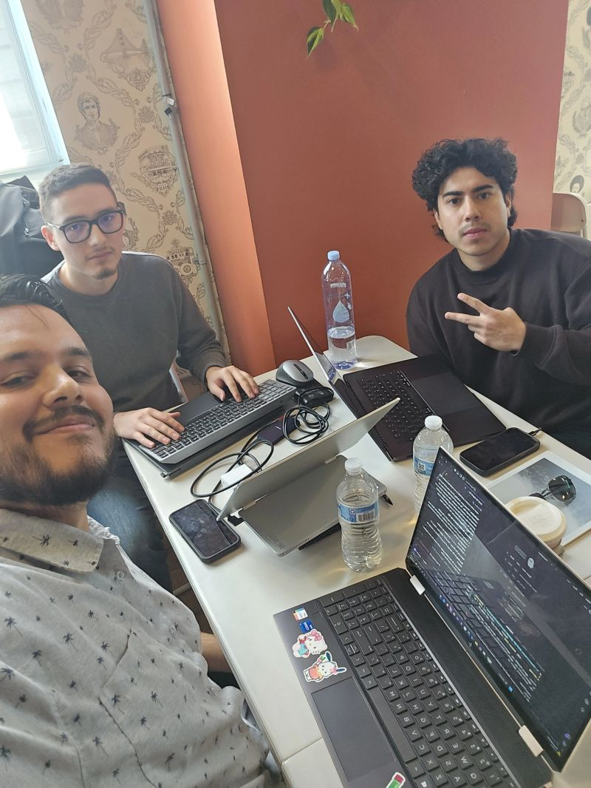

Clearframe is an AI-generated video quality review prototype created for the AI Hackathon. I co-developed a prototype combining local vision-language model review with frame-level brightness checks to investigate visible defects in AI-generated videos.
I evaluated model judgments on generated footage and identified unreliable road-marking assessments when frames were reviewed without source references.
I conducted exploratory source-versus-generated frame comparisons to investigate improvements in defect identification and document remaining limitations.
